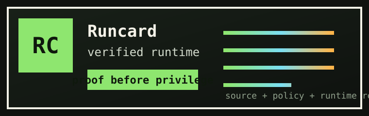

ALLOW
- source
- github.com/acme/support-flow
- policy
- reviewed-main-only
- runtime
- tdx / tls bound
- value_x
- f44f87e6...
runcard verified
proof before privilege
Runcard gives apps a shareable proof card before they hand real power to an agentic workflow, MCP server, package, deploy job, or service.
It is a portable card for what is running, where it came from, and whether it is allowed to receive privilege.
Verify the runtime serving the workflow before it receives a token that can write issues, open PRs, or touch customer records.
Let a host expose read-only discovery first, then require a proof receipt before shell, database, browser, or filesystem tools.
Compare the ordinary CI artifact with a hardware-rooted rebuild witness before the package reaches users.
Gate sensitive material on a live runtime receipt instead of assuming that an identity token proves what code is running.
Runcard should make attestation visible without making people parse it. The card is the thing a developer can share; the receipt is the evidence object apps and workflows verify.
runcard.verify() for apps and runcard gate
for CI, deploy, and secret-release jobs.
{
"subject": "https://agent.example.com",
"source": "github.com/acme/support-flow",
"commit": "b34db33f",
"value_x": "f44f87e6...",
"runtime": "tdx",
"tls_spki": "a5c3...",
"policy": "reviewed-main-only",
"verdict": "pass"
}
The product object should be a Runcard: a compact, inspectable card with a verdict, subject, source, policy, and receipt URL. It can sit in a README, package page, agent directory, PR check, marketplace listing, or service dashboard.

const verdict = await runcard.verify("https://agent.example.com", {
source: "github.com/acme/support-flow",
policy: "reviewed-main-only"
});
if (verdict.ok) await secrets.release("PROD_SUPPORT_TOKEN");
runcard gate \ --receipt ./proof-receipt.json \ --policy .runcard.yml
tools: verify_runtime explain_receipt should_release_secret verify_artifact
Under the Runcard name, the existing v2/ engine already
builds inside trusted hardware, emits an EAT receipt, serves an
attested TLS certificate, and walks the runtime chain back to the build.
| piece | state | purpose |
|---|---|---|
| Stage 0 | working | source -> artifact receipt |
| Stage 1 | working | runtime verifies build |
| attested TLS | working | TLS key bound to receipt |
| shadow build | next | receipts without TEE ops |
This widget walks the GitHub tree and reproduces the source identity signed in the archived ouroboros run. Full hardware quote verification remains in the Rust verifier.
v2 at commit 2593db6A badge-like receipt for READMEs, PRs, packages, and agent directories.
One object to log, inspect, and pass across services.
A PR says whether this build can receive privilege.
Deploy and secret jobs get a deterministic verdict.
Receipt checks at the tool boundary.
Receipts for projects that do not own TEE hardware.
The implementation engine is Stage 0 build proof, Stage 1 runtime proof, and a verifier that checks the chain before privilege is released.